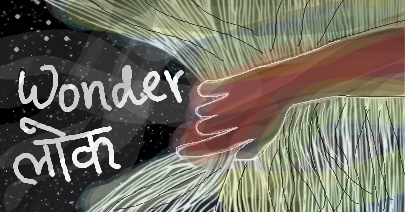
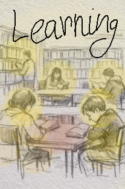
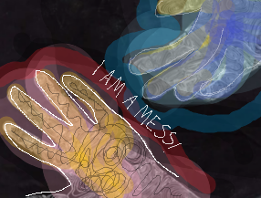
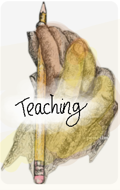

A cup
One useful idea.

YOU HAVE ENTERED • LEARNING LOK
Eighteen pathways live inside five worlds. You do not need to choose your entire future today—only the doorway that makes you curious enough to take one more step.
Explore the five worlds ↓A NOTE BEFORE YOU CHOOSE
You may enter through mathematics and leave thinking about music. You may begin with medicine and discover design. The worlds organise the pathways; they do not place walls between them.
THE FIVE LEARNING WORLDS
Open a world to find its pathways, resources and places to begin.

बढ़ते मन · Badhte Man
Learning through the different stages of growing up—without rushing anyone past where they are.
ब्रह्मांड की लय · Brahmand Ki Lay
Follow numbers, natural systems, machines and code into the structures connecting everything.

मानव कथाएँ और अभिव्यक्ति
Explore how humans remember, communicate, question, perform and make meaning together.

जीवन, कर्म और प्रभाव
See how knowledge becomes care, enterprise, practical skill and contribution in the real world.

ज्ञान और नेतृत्व · Gyaan Aur Netritva
For people ready to investigate difficult questions, guide others and shape the future of learning.
THE KNOWLEDGE RIVER
You do not need to carry the whole river. Take one idea, practise one skill or follow one question as deeply as you wish. You can always return.
One useful idea.
A little practice.
A question explored deeply.
WRONG WORLD? IMPOSSIBLE.